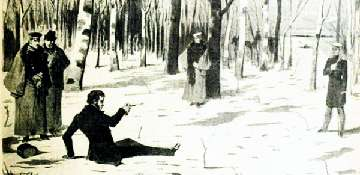
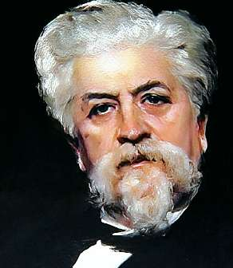

Борис Акунин
Мой календарь
Годовщина дуэли, на которой обычный человек смертельно ранил великого человека.
По обычным, общепринятым понятиям великий человек был виноват сам: вел себя неадекватно и возмутительно, чудовищно оскорблял, провоцировал и так далее. Может быть, Жорж Дантес вообще не был ни в чем виноват - споры длятся до сих пор.
Какая к черту разница? Был Пушкин, создавший ту Россию, которую мы любим, и не стало Пушкина. Может быть, проживи он дольше и напиши больше, современная Россия получилась бы лучше, чем она есть. Потому что великий поэт способен колоссально облагородить и возвысить культуру, к которой он принадлежит. Как Шекспир, как Сервантес.
Говорят, что, когда Дантеса на склоне лет спросили, не раскаивается ли он, что убил великого поэта, старик ответил примерно в таком смысле: а что, лучше бы он меня убил? Я между прочим тоже не хрен собачий, а сенатор империи.
Сегодня вспоминаем Пушкина. И обязательно прочтите сами себе его стихотворение, которое любите больше всего.
Мое любимое - про побег в обитель дальную трудов и чистых нег.